Suape na Palma da Mão
Alimentos e Bebidas
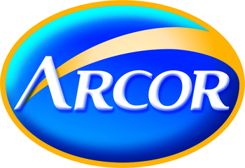
O Grupo Arcor surgiu em 1951, com a criação de uma fábrica de balas, por jovens empreendedores, com o objetivo de oferecer produtos de qualidade para as pessoas de todo o mundo. Atividade: Produção de guloseimas
Atividade: Produção de guloseimas
Município: Ipojuca
Polo: Alimentos e Bebidas
Endereço: Rodovia PE60, KM12,5. Engenho do Meio, Suape, Ipojuca-PE. CEP: 55.590-972
Contato: +55 81 3326-3055
A Bunge é líder global em agronegócio, alimentos e ingredientes e tem um papel importante a desempenhar no uso de sua infraestrutura agrícola para ajudar a desenvolver soluções de energia renovável.
Atividade: Moagem de trigo e fabricação de derivados
Município: Ipojuca
Polo: Alimentos e Bebidas
Endereço: Avenida Portuária, Lote 20 - Rodovia PE-60, km 10, Via Coletora Z1 - Engenho Massangana, 55590-000 Ipojuca, PE
Contato: +55 81 3527-8900
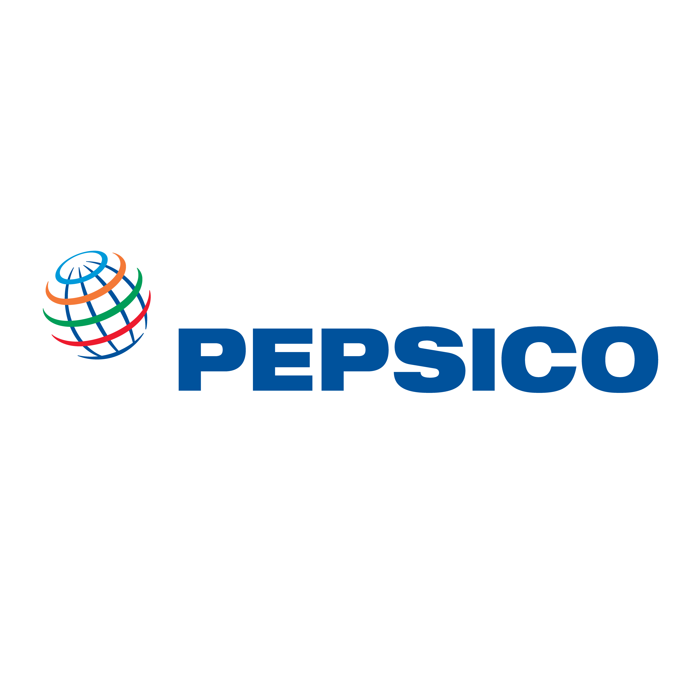
No Brasil desde 1953, a PepsiCo se expandiu acompanhando o desenvolvimento do próprio país. Atualmente nossa operação em território nacional engloba mais de 71 centros de distribuição.
Atividade: Fabricação e comércio de produtos alimentícios
Município: Cabo de Santo Agostinho
Polo: Alimentos e Bebidas
Endereço: Rodovia PE60, Zona Industrial 3, Gleba Oeste, Cabo de Santo Agostinho-PE. CEP: 54.590-000
Contato: +55 81 3527-5600, 0800-725-50004
Eólico

A LM Wind Power faz parte da energia renovável da GE, num esforço conjunto para fornecer energia a um mundo mais limpo e libertar energia ilimitada . Com mais de quatro décadas de experiência, nos estabelecemos como o fornecedor preferencial de pás para turbinas eólicas em todo o mundo.
Atividade: Produção de pás eólicas
Município: Ipojuca
Polo: Eólico
Endereço: Rodovia Novo Acesso ZIP SUAPE, s/n, 55592-000 Ipojuca, PE
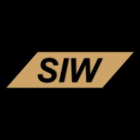
A SIW Kits Eólicos produz kits de balsa e/ou espuma para pás eólicas. Entregamos peças prontas de acordo com as necessidades exatas de nossos clientes com garantia de qualidade de acordo com especificações e requisitos previamente estabelecidos.
Atividade: Fabricação de kits eólicos
Município: Cabo de Santo Agostinho
Polo: Eólico
Endereço: Rodovia PE-60, km 10, Ipojuca, PE
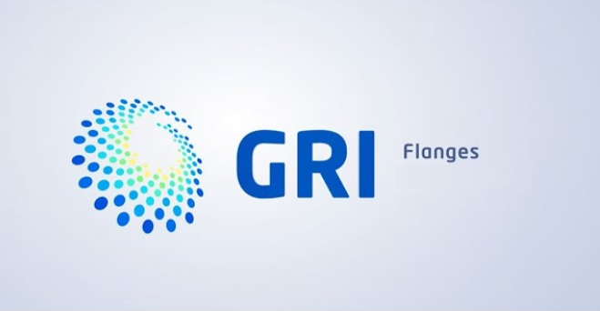
Atividade: Fabricação de Flanges Eólicas
Município: Cabo de Santo Agostinho
Polo: Eólico
Endereço: Travessia da TDR Norte, nº 573, 54590-000 Cabo de Santo Agostinho, PE
Contato: +55 (81) 2123-2122
Geração de energia
A Energética Suape II S.A. ('Suape Energia') é uma sociedade de propósitos específicos que tem como objetivo a geração, o suprimento e a comercialização de energia elétrica através da UTE Suape II, usina termelétrica a óleo combustível com capacidade instalada de 381,2 MW.
Atividade: Geração de energia
Município: Cabo de Santo Agostinho
Polo: Geração de Energia
Endereço: Rodovia PE-60, km 10, n°8100, Cabo de Santo Agostinho, PE
Contato: +55 (81) 3334-3000 / (21) 2215-4555
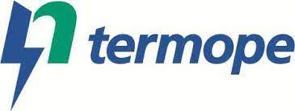
Desde 15 de maio de 2004 a Termopernambuco (Termope), usina termoelétrica do Grupo Neoenergia, atua na geração de energia para o estado de Pernambuco, possuindo capacidade de geração de 532 MW.
Atividade: Geração de energia
Município: Ipojuca
Polo: Geração de Energia
Endereço: Avenida Portuária, 55590-972 Ipojuca, PE
Contato: +55 81 3527-6500, +55 81 3527-7550
Granéis Líquidos e Gaseso
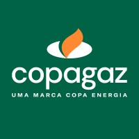
Hoje, a Copagaz faz parte da Copa Energia, empresa em soluções energéticas sustentáveis que atende pessoas e empresas que optam por uma matriz mais limpa, com produtos que aquecem e transformam lares e empresas. Viabiliza o cotidiano com mais comodidade e eficiência em todo o brasil.
Atividade: Comércio atacadista de gás liquefeito de petróleo (GLP)
Município: Ipojuca
Polo: Granéis Líquidos e Gases
Endereço: Avenida Portuária, s/n, Ipojuca-PE. CEP: 55.594-900
Contato: +55 81 2101-0200
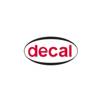
a Decal Brasil está autorizada pela AGÊNCIA NACIONAL DE PETRÓLEO (ANP) a formular e prestar serviço de formulação de gasolina e diesel, bem como realizar o gerenciamento logístico de atividades que envolvam os fluxos de importação e exportação, armazenagem, transporte, manuseio, carga e descarga de produtos petroquímicos.
Atividade: Armazenagem, formulação e movimentação de granéis líquidos
Município: Ipojuca
Polo: Granéis Líquidos e Gases
Endereço: Avenida Portuária, s/n, 55590 970 Ipojuca, PE
Contato: +55 81 3311-5950
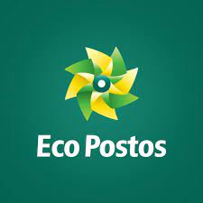
Atividade: Comércio de combustíveis
Município: Cabo de Santo Agostinho
Polo: Granéis Líquidos e Gases
Endereço: Rodovia PE-60, km 08, s/n, Engenho Serraria, Vila Dois Irmãos, 54520 992 Cabo de Santo Agostinho, PE
Logística
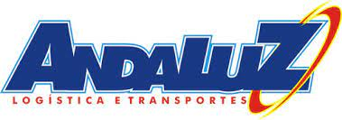
Desde 2003 a Andaluz desafia as estradas brasileiras para garantir a entrega de mercadorias com segurança e pontualidade. As más condições das estradas nunca conseguiram nos desanimar no nosso desafio de fornecer o melhor serviço.
Atividade: Logística e transporte rodoviário de produtos perigosos
Município: Ipojuca
Polo: Logística
Endereço: Rodovia PE60, KM10, S/N, Engenho Massangana, Suape, Ipojuca-PE. CEP: 55.590-000
Contato: +55 81 2125-1800, 3527 1509
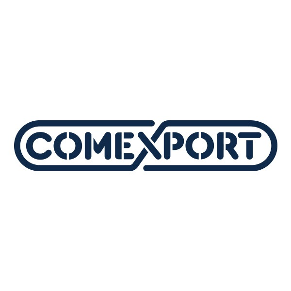
Fundada em 1973, a COMEXPORT é a maior empresa de comércio exterior do Brasil. Possui a mais completa e eficiente estrutura em comércio internacional – com ampla experiência nos processos operacional, logístico, tributário, aduaneiro e financeiro
Atividade: Prestação de serviço automotivo / centro de distribuição da Toyota
Município: Cabo de Santo Agostinho
Polo: Logística
Endereço: Estrada TDR Norte, 3005, BL 01 – Sala 01
Contato: +55 (11) 2137-4392
A cone atua adquirindo, desenvolvendo e aplicando uma gestão intensiva de ativos logísticos, comerciais e industriais. Tudo isso em sinergia com infraestrutura próxima de portos, aeroportos, ferrovias e pólos de investimentos.
Atividade: Prestação de serviço automotivo / centro de distribuição da Toyota
Município: Cabo de Santo Agostinho
Polo: Logística
Endereço: Rodovia BR-101 Sul, nº 5225, 54503-900 Cabo de Santo Agostinho, PE
Contato: + 55 81 99244-8850
Farmacêutico
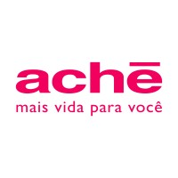
O Aché atua há 56 anos no desenvolvimento de soluções inovadoras, que resultam em produtos e serviços diferenciados disponibilizados ao mercado farmacêutico, com o propósito de levar mais vida às pessoas, onde quer que elas estejam. Estamos posicionados entre as cinco maiores corporações farmacêuticas do Brasil, conforme a metodologia Pharmacy Purchase Price (PPP).
Atividade: Fabricação de medicamentos alopáticos para uso humano
Município: Cabo de Santo Agostinho
Polo: Farmacêutico
Endereço: Rodovia PE-09, nº 5601, 54590-000 Cabo de Santo Agostinho, PE
Contato: +55 81 3084-7009